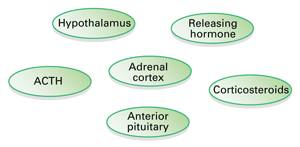
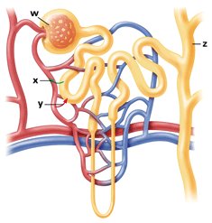

Reviewing Concepts
Multiple Choice
Choose the letter of the best answer.
1. The liver converts the toxic substance ammonia to
a. urine.
b. urea.
c. glycogen.
d. glucose.
2. Which of the following is not considered part of the excretory system?
a. kidney
b. thyroid
c. skin
d. urethra
3. A structure within the kidney that filters blood is called a
a. nephron.
b. capillary.
c. medulla.
d. hypothalamus.
4. The hormone that regulates water balance is
a. testosterone.
b. ADH.
c. insulin.
d. glucagon.
5. A disease of the liver that is highly infectious is
a. cirrhosis.
b. hepatitis B.
c. artherosclerosis.
d. diabetes.
6. The hormone melatonin is thought to
a. make you feel drowsy.
b. prepare your body for urgent action.
c. regulate calcium levels.
d. increase water absorption in the kidneys.
7. The pancreas
a. secretes insulin.
b. secretes glucagon.
c. helps regulate blood glucose levels.
d. all of the above.
8. When the hypothalamus sends nerve signals to the adrenal medulla, it is initiating
a. a stress response.
b. the uptake of calcium from the blood.
c. shivering.
d. the release of ADH into the blood.
Short Answer
9. Explain the result of excretion.
10. Name four structures of the excretory system and explain the function of each.
11. Name and describe each of the four steps of fluid processing by nephrons.
12. Describe two functions of the liver.
13. Explain why being lipid-soluble is an important characteristic of steroid hormones.
14. What is the relationship between the hypothalamus and the two lobes of the pituitary gland?
15. Explain the relationship between TSH and thyroxine.
16. Explain how calcium level in the blood is regulated.
17. What is diabetes mellitus? Contrast the two types of diabetes mellitus.
18. Describe how the body responds to epinephrine.
Visualizing Concepts
19. Copy the terms below and arrange them into a flowchart of the events leading to a long-term stress response. Then write a sentence for each term, explaining its position in the flowchart.

Applying Concepts
Analyzing Information
20. Analyzing Diagrams Use the diagram of a nephron to answer the questions below.

a. Name the capillary structure labeled w. What stage of fluid processing occurs here?
b. Describe what the arrows labeled x and y represent.
c. What is the function of the structure labeled z?
21. Analyzing Graph This graph depicts changes in blood glucose level in two people over time.

a. Describe the change for each individual.
b. Suggest a reason for the difference in the two graphs.
Critical Thinking
22. Relating Cause and Effect Describe two health problems that might result if a person's liver stopped functioning.
23. Making Generalizations Describe how endocrine glands contribute to homeostasis.
24. Comparing and Contrasting Explain the difference between steroid and nonsteroid hormones, including how both types of hormones influence target cells.
25. What's Wrong With These Statements?
Briefly explain why each statement is inaccurate or misleading.
a. Secretion eliminates drugs and toxic substances from the filtrate.
b. ACTH stimulates the liver to manufacture glycogen.
c. All cells respond to each type of hormone that circulates in the body.
d. Calcitonin stimulates the release of calcium from bones.
Performance Assessment
Biology Research Project Select an endocrine gland and one of its hormones from Figure 32-13. Research and write a report on the role that hormone plays in homeostasis, including a description of how it is regulated—for instance, by a negative feedback loop. What health effects may result if the endocrine gland that secretes your chosen hormone stops functioning?